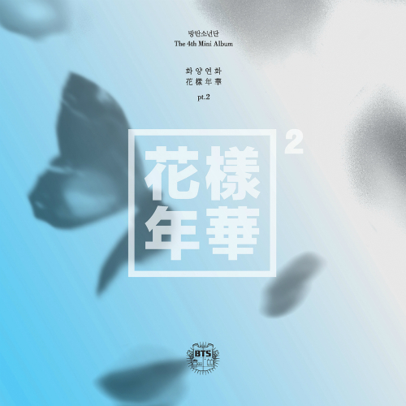
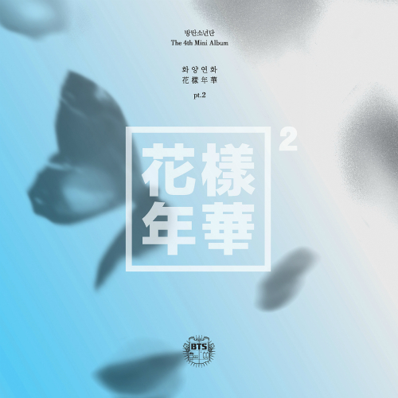

.png)
앨범명 : 2 COOL 4 SKOOL (싱글)
발매일 : 2013. 06. 12
.jpg) 앨범명 : O! RUL8, 2? (미니)
발매일 : 2013. 09. 11
Oh! ARe you late, too? 라고 읽음.
앨범명 : Skool Luv Affair (미니)
발매일 : 2014. 02. 12
앨범명 : Skool Luv Affair Special Addition (스페셜)
발매일 : 2014. 05. 14
앨범명 : O! RUL8, 2? (미니)
발매일 : 2013. 09. 11
Oh! ARe you late, too? 라고 읽음.
앨범명 : Skool Luv Affair (미니)
발매일 : 2014. 02. 12
앨범명 : Skool Luv Affair Special Addition (스페셜)
발매일 : 2014. 05. 14
.jpg) 앨범명 : DARK & WILD (정규)
발매일 : 2014. 08. 20
앨범명 : 화양연화 pt. 1 (미니)
발매일 : 2015. 04. 29

앨범명 : 화양연화 pt.2 (미니)
발매일 : 2015. 11. 30
앨범명 : DARK & WILD (정규)
발매일 : 2014. 08. 20
앨범명 : 화양연화 pt. 1 (미니)
발매일 : 2015. 04. 29

앨범명 : 화양연화 pt.2 (미니)
발매일 : 2015. 11. 30
.jpg) 앨범명 : 화양연화 Young Forever (스페셜)
발매일 : 2016. 05. 02
앨범명 : 화양연화 Young Forever (스페셜)
발매일 : 2016. 05. 02
.jpg) 앨범명 : WINGS (정규)
발매일 : 2016. 10. 10
앨범명 : YOU NEVER WALK ALONE (리패키지)
발매일 : 2017. 02. 13
앨범명 : WINGS (정규)
발매일 : 2016. 10. 10
앨범명 : YOU NEVER WALK ALONE (리패키지)
발매일 : 2017. 02. 13
.jpg) 앨범명 : LOVE YOUTSELF 承 'Her' (미니)
발매일 : 2017. 09. 18
앨범명 : LOVE YOURSELF 轉 'Tear' (정규)
발매일 : 2018. 05. 18
앨범명 : LOVE YOUTSELF 承 'Her' (미니)
발매일 : 2017. 09. 18
앨범명 : LOVE YOURSELF 轉 'Tear' (정규)
발매일 : 2018. 05. 18
.jpg) 앨범명 : LOVE YOURSELF 結 'Answer'
발매일 : 2018. 08. 24
앨범명 : Map of the soul : PERSONA
발매일 : 2019. 04. 12
앨범명 : LOVE YOURSELF 結 'Answer'
발매일 : 2018. 08. 24
앨범명 : Map of the soul : PERSONA
발매일 : 2019. 04. 12